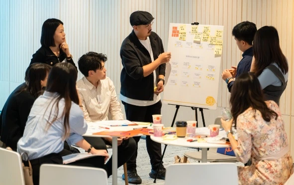
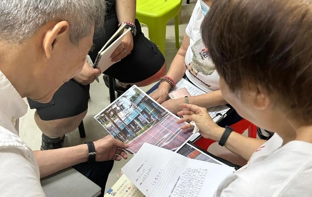
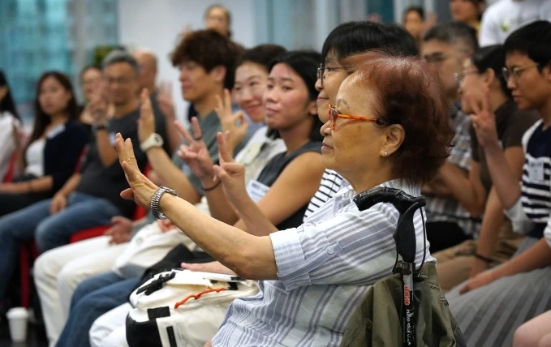
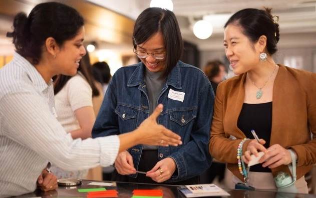
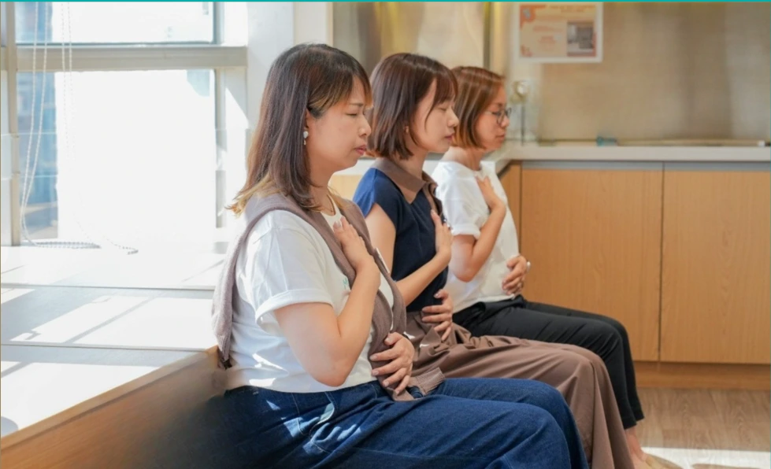

故事
慈悲實踐的故事
故事焦點

Project Fuel
在挑戰中支持非牟利機構前行

Future Education in Action 2.0
Connecting educators and communities to support life and career exploration.

Lion Rock 2.0
Growing mutual care and connection through time banking.

Community Changemaker Fellowship
Supporting community leaders to advance social inclusion.

Co’asis
A community where social purpose organisations learn and grow together.
探索所有故事
Project Fuel
在挑戰中支持非牟利機構前行
D’ Well
Mindfulness and self-care, made part of everyday life.

Future Education in Action 2.0
Connecting educators and communities to support life and career exploration.
Lion Rock 2.0
Growing mutual care and connection through time banking.
Community Changemaker Fellowship
Supporting community leaders to advance social inclusion.
Co’asis
A community where social purpose organisations learn and grow together.
社區創變者 Fellowship
培育創變者，推動更共融的社會

慈悲創效社群
透過共同學習、網絡連結與信任建立，讓社會創效社群走得更近。
和平育兒計劃
以可持續的方式，透過育兒實踐把和平帶進家庭與社群
PILnet — 法律健康檢查計劃
提升香港本地及離散社群機構的韌性

陳廷驊基金會獎學金計劃
投資今天，成就明天的影響

慈悲兒童計劃
將慈悲價值帶入校本課程

未來教育實踐 2.0
透過跨界協作，推動以價值為本的生命探索教育

金齡同行之路
透過運動與自我重尋，支持照顧者的身心安康

青年 ImpACT 獎
一個鼓勵青年推動社會創新、培養慈悲精神的重要獎項

腦健社區計劃
透過便利的篩查與社區支援，改善認知障礙照護

社區創變者 Fellowship
培育創變者，推動更共融的社會
超越同行
慈悲創效社群
透過共同學習、網絡連結與信任建立，讓社會創效社群走得更近。
正念生活
和平育兒計劃
以可持續的方式，透過育兒實踐把和平帶進家庭與社群
卓越教育
PILnet — 法律健康檢查計劃
提升香港本地及離散社群機構的韌性
超越同行
陳廷驊基金會獎學金計劃
投資今天，成就明天的影響
卓越教育
慈悲兒童計劃
將慈悲價值帶入校本課程
正念生活
未來教育實踐 2.0
透過跨界協作，推動以價值為本的生命探索教育
卓越教育
和平育兒計劃
以可持續的方式，透過育兒實踐把和平帶進家庭與社群
卓越教育